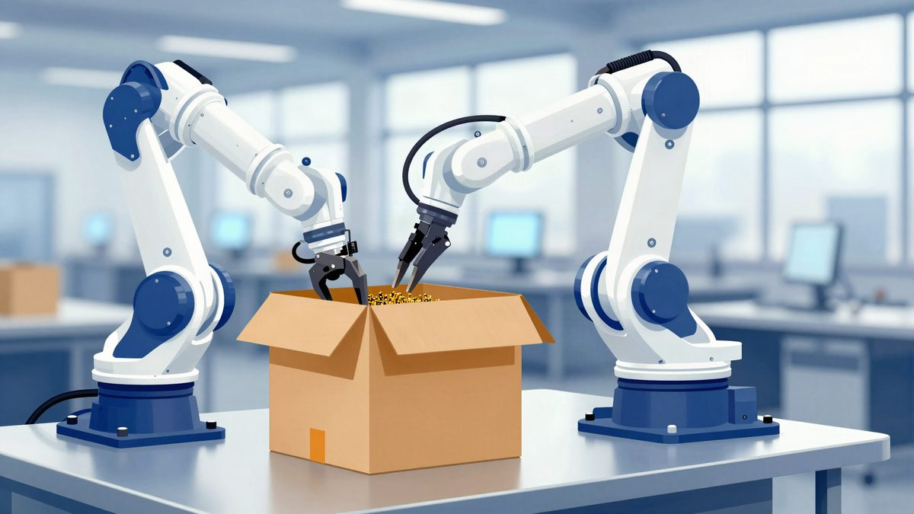

Siemens razvija robota koji sam otvara kutije s elektroničkim komponentama

Siemens u tvornici razvija robota koji kamerama prati radnu zonu, otvara kartonske kutije i vadi koluture s elektroničkim komponentama. Na sajmu SPS 2026 predstavio je i Autonomous Production Planner, sustav agenata za planiranje proizvodnje, za koji očekuje do 70 posto manje ručnog planiranja.
Siemens razvija robota za fizičke zadatke, a prvi cilj mu je raspakiranje isporuka elektroničkih komponenti. Robot otvara kartonske kutije i vadi koluture s komponentama, a kamere prate što se događa u radnoj zoni. Na temelju toga model odlučuje koji je sljedeći korak.
Taj posao danas većinom rade ljudi. Isporuke su po veličini i vrsti kutija previše raznolike za klasične industrijske robote s fiksnim programima. Tvornica u kojoj se sustav razvija prima od 80 do 200 paketa dnevno.
Učenje daljinskim upravljanjem
Robota su učili daljinskim upravljanjem. Ljudi su mu pokazali kako se izvode pojedine operacije, a sustav je preuzeo slijed radnji. Radi na Siemensovim industrijskim računalima s Nvidia chipovima. Siemens za sada nije naveo rokove, kad bi mogao biti spreman.
U travnju je Siemens u istom pogonu već proveo osmosatna testiranja humanoidnog robota zajedno s Nvidijom.
Planiranje proizvodnje
Na sajmu SPS 2026 u Nürnbergu Siemens je predstavio i alat Autonomous Production Planner. Više agenata zajedno izrađuje proizvodne rasporede, a zatim ih provjerava na digitalnoj kopiji pogona. Siemens očekuje do 70 posto manje ručnog planiranja i do 20 posto niže troškove.
Siemens sljedeći veliki skok produktivnosti u industriji povezuje s automatizacijom zadataka koje se dosad nije moglo prepustiti strojevima. Uvođenje AI-ja u proizvodnju postaje i polje konkurencije među velikim industrijskim tvrtkama. Schneider Electric je u lipnju dogovorio kupnju developera industrijskog AI-ja Cognite za 3,1 milijardu dolara (oko 2,7 milijardi eura).
Izvor: iXBT